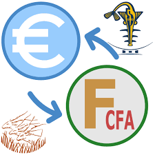

<!DOCTYPE html>
<html lang="en">
<head>
    <meta charset="UTF-8">
    <meta name="viewport" content="width=device-width, initial-scale=1.0">
    <title>Document</title>
    <script>
        
        // essaie
        // function conversion(){
        //     let euros = prompt("veuillez entrez en montant:",'en euros')
        //     let multi = euros*6.55957
        //     let result = alert('\n votremontant en euros est: \n'+euros + 'euros' + '\nvotre montant en cfa est : \n'+multi +'FCFA')
        //     return
        // }
        
        // ameliorons la fonction pour utliliser dans plusieurs cas sans avoir a ecrire plusieurs fonction

//         function conversion(unite1, taux, unite2)
// {
// let valeur = prompt("Entrez la valeur à convertir, en " + unite1);
// let resultat = valeur * taux;
// alert(valeur + ' ' + unite1 + '\n' + resultat + ' ' + unite2);
// }
    </script>

</head>
<body>
    <style>
        p img{
            height: 100px;
        }
    </style>
 <!-- <p>
     <br />
    <a href="#" onclick="conversion('m',100,
    'cm')">Conversion mètres &gt; centimètres</a>
    </p> -->

    <!-- <script>
         const a = 3;
         const notes = [13,14,15,10, 'hello',[1,2,3]]
         //les condidtions
        //  const age = 20
        //  const pays = 'FR'

        //  if((pays === 'FR' &&  age >=18 ) || 
        //  (pays === 'US' && age >=16)) {
        //     console.log("vous etes majeur")
        //  }
// const age  = prompt("quel est votre age ")
//          if (age<=13 ){
//             console.log('lilo & stich')
//          } else if (age > 13 && age< 18 ){
//             console.log('matrix')
//          }else{
//             console.log("evil dead")
//          }

 let nbre1 = prompt("entrer un nombre")
let  nbre2 = prompt("entrer un second nombre")
nbre1 = parseInt(nbre1)
nbre2 = parseInt(nbre2)

if(isNaN(nbre1) || isNaN(nbre2)){
    alert("veuillez entrer des nombres valides")
}
 if(nbre2 === 0){
    alert("pas possible")
    
}
else{
    const resultat = parseInt(nbre1) / parseInt(nbre2)
    alert ("le quotient est :" +resultat)
}

    </script> -->
  <!-- mini calculatrice -->
   <!-- <script>
    // Fonction d'addition
function addition(num1, num2) {
    return num1 + num2;
}

// Fonction de soustraction
function soustraction(num1, num2) {
    return num1 - num2;
}

// Fonction de multiplication
function multiplication(num1, num2) {
    return num1 * num2;
}

// Fonction de division
function division(num1, num2) {
    if (num2 === 0) {
        return "Erreur : Division par zéro";
    } else {
        return num1 / num2;
    }
}

// Demande à l'utilisateur de saisir deux nombres
let nombre1 = parseFloat(prompt("Entrez le premier nombre : "));
let nombre2 = parseFloat(prompt("Entrez le deuxième nombre : "));

// Affiche les résultats des opérations
alert("Résultats des opérations :");
alert("Addition : " + addition(nombre1, nombre2));
alert("Soustraction : " + soustraction(nombre1, nombre2));
alert("Multiplication : " + multiplication(nombre1, nombre2));
alert("Division : " + division(nombre1, nombre2));

   </script> -->

   <!-- LES CONDITIONS   -->
    <!-- cas des booleens -->

    <!-- <script>
        var age = prompt('Quel âge avez-vous ? (en années)');
// on compare l'age : s'il est superieur ou egal à 18 ans, alors le visiteur est majeur

var majeur = (age >= 18);
alert('Vous êtes majeurs : ' + majeur); // on verifie que ça marche
    </script> -->
</body>
</html>